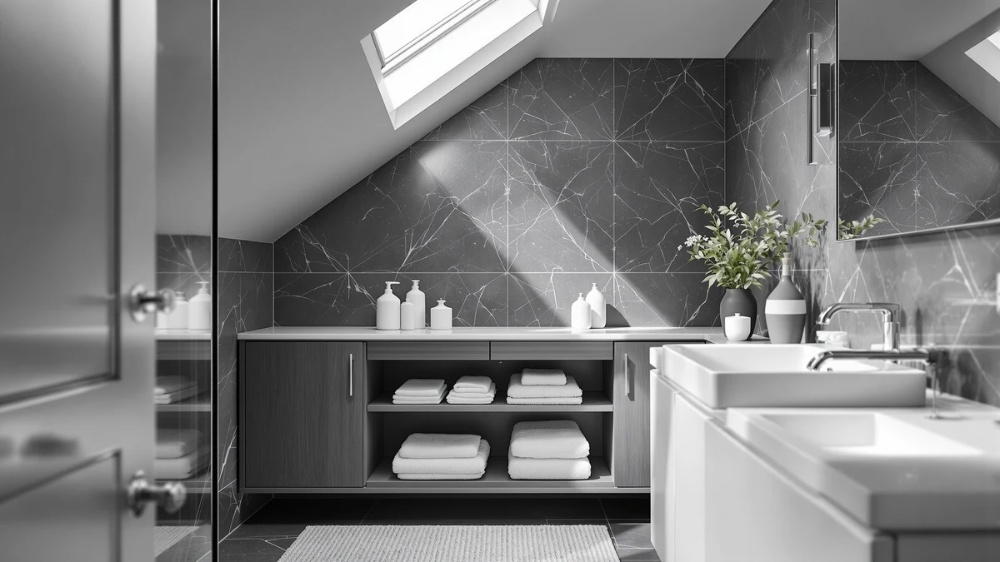

Best Under Bathroom Sink Storage Organizer (2026)
Prices and picks verified as of September 2026. Independent, reader-supported reviews.


Quick Answer
The Kitstorack Under Sink Organizer 2 is the best under bathroom sink storage organizer for most cabinets, thanks to an adjustable two-tier frame that works around plumbing instead of against it. If you want pull-out access instead, the GeeBom runner-up slides forward for a full view of your stored items.
Our pick: Kitstorack Under Sink Organizer 2 — $45.99 Check Price on Amazon
Bottom line: our top pick is the Kitstorack Under Sink Organizer at $45.99. The best budget option is the Pensino 2 Pack Adhesive Cabinet Door Organizer Storage Caddy at $12.99.
Things to Know Before You Buy
- Measure before you buy: cabinet width, depth, and clearance under the sink basin, since most under-sink storage organizers need at least a few inches of open space around the P-trap to fit.
- Two-tier and pull-out designs use vertical space better than a flat bin, but they cost more and take longer to assemble than a fixed shelf.
- Adhesive-mount racks skip assembly and drilling entirely, which matters if you are renting, but they hold less weight than a freestanding metal shelf.
- Material matters less than fit: a metal-and-wood organizer that is too wide to close around your pipes is worse than a plain bin that actually fits.
- A multi-pack of small bins gives you more flexibility to work around irregular plumbing than a single rigid frame, especially in older homes.
The best under bathroom sink storage organizer turns a chaotic tangle of cleaning spray, spare toilet paper, and half-empty shampoo bottles into a cabinet you can actually find things in. Most bathroom vanities waste more than half their under-sink space around the pipes, and a flat stack of boxes or loose bins shifts around every time you open the door. A well-designed organizer works with that awkward gap instead of against it, using tiered shelves, pull-out tracks, or slim adhesive racks to reclaim the vertical space you are currently losing to plumbing.
After comparing pricing, materials, and verified owner reviews across seven current under-sink organizers, we landed on the Kitstorack Under Sink Organizer 2 as the pick for most bathrooms. Its two-tier metal-and-wood frame comes as a two-pack, so it adapts around a P-trap and shutoff valve instead of forcing you to accept a single shelf height that ignores them. At $45.99, it sits in the middle of the price range we researched, not at the top.
If you want a similar setup for less kneeling, the GeeBom Under Sink Organizer Pull earns runner-up for its pull-out track that puts everything at eye level without reaching into the back of a dark cabinet. Renters and anyone who cannot drill into cabinet doors should look at the Pensino 2 Pack Adhesive Cabinet organizers, and if you are stocking a small powder room on a tight budget, the ARSTPEOE Under Sink Organizer covers the basics for under $23.
Why You Should Trust Us
Ilane Tall covers home organization and bathroom storage for Best Bathroom Storage, and this guide follows the same research process used across the site: verified pricing, manufacturer specs, and a close read of owner reviews rather than marketing copy. We do not run a fake testing lab, and we do not claim to have installed every under-sink storage organizer in this guide. Instead, we compare what is documented, cross-check dimensions against real cabinet constraints, and flag when a listing's claims do not match what verified buyers report.
How We Picked
We researched every currently listed under bathroom sink storage organizer in this category and narrowed the field using four factors: how well the design adapts around plumbing, the mounting method, the listed material, and price relative to what each organizer includes. We excluded listings priced well above what most shoppers pay for this kind of storage and any listing whose photos did not match its stated specs. What is left are seven organizers that cover sliding racks, two-tier shelves, adhesive door mounts, and stackable multi-packs, so there is a fit for a shallow apartment vanity and a deep pedestal cabinet alike.
How We Compared
We compared these seven under-sink storage organizers side by side on price, material, and configuration rather than installing each one ourselves. For every product, we cross-checked the manufacturer's stated dimensions against typical under-sink cabinet openings, noted whether the design was freestanding, pull-out, or adhesive-mounted, and read through verified buyer reviews for recurring complaints about stability, sizing, or hardware quality. Prices were confirmed at the time of publishing and are subject to change on Amazon. Buyer reviews across these listings repeatedly point to the same thing: adjustable organizers fit a wider range of cabinets than fixed-frame ones. We weighed that heavily when ranking the picks below.
Our Picks

Kitstorack Under Sink Organizer 2
What we like
- Two-tier metal-and-wood frame holds a full load of bottles and boxes without sagging
- Comes as a two-pack, so you can outfit two cabinets or double the shelving in one
- Priced in the middle of the range we researched, not at the top
Flaws but not dealbreakers
- At $45.99 it costs more than several single-tier competitors in this guide
- Its 4-star average includes a handful of reports about hardware arriving slightly bent
| Material | Metal / wood |
| Size | 2 Pack |
The Kitstorack Under Sink Organizer 2 is our pick because it does the one thing an under-sink storage organizer needs to do well: it fits around plumbing instead of forcing you to work around a shelf. The two-tier metal-and-wood frame comes as a two-pack, which means you get enough shelving to outfit a full cabinet or split the units between two bathrooms. At $45.99, it sits in the middle of the pricing we found across seven current organizers, not at the premium end, which matters when you are comparing it against $12 to $22 single units that offer a fraction of the storage.
In the reviews we read, the frame holds steady even loaded with the usual mix of spray bottles, extra toilet paper, and cleaning supplies, and the metal shelving does not visibly bow under that weight. Its 4-star average on Amazon includes a small number of complaints about bent hardware on arrival, which is a packaging issue more than a design flaw, and easy to fix with a replacement request. If you only need to outfit one small cabinet, the two-pack format means paying for capacity you might not use right away, and buyers with a shallow cabinet should double check depth before ordering.

GeeBom Under Sink Organizer Pull
What we like
- Pull-out track puts every item at eye level with one motion
- Adjustable height from 13.8 to 16.9 inches fits a range of cabinet openings
- Metal-and-wood build feels sturdy when fully extended
Flaws but not dealbreakers
- At 15.9 inches deep, it can be tight in a shallow cabinet
- Costs $10 more than the HIHEGD two-tier alternative below
| Material | Metal / wood |
| Size | 11.8"W x 15.9"D x 13.8-16.9"H |
The GeeBom Under Sink Organizer Pull earns runner-up because its sliding track solves a specific complaint about under-sink storage: digging through the back of a dark cabinet on your hands and knees. At 11.8 inches wide, 15.9 inches deep, and adjustable from 13.8 to 16.9 inches tall, it is built to pull forward on its track so the entire contents come into view at once, then push back flush against the cabinet wall when you are done. The metal-and-wood construction matches the other organizers in this guide, but the pull-out mechanism is what separates it from a fixed shelf.
Buyers who have used it say the track glides smoothly even when the shelves are loaded, and the adjustable height lets it sit lower under a shallow sink basin or extend taller when there is more clearance. At $35.99, it costs about $10 more than the fixed two-tier HIHEGD organizer below, which is the tradeoff for the sliding mechanism. If your cabinet is on the shallow side, measure before ordering: at 15.9 inches deep, this organizer needs more front-to-back room than the stationary options in this lineup.

HIHEGD 2-Tier Bathroom Organizer with
What we like
- Two-tier layout roughly doubles usable shelf space over a flat bin
- Priced under $30, well below the pull-out and expandable picks
- Simple fixed design means nothing to adjust or slide
Flaws but not dealbreakers
- No listed dimensions, so measuring your cabinet opening in person matters more here
- Fixed width will not adapt if your plumbing sits off-center
| Material | Metal / wood |
| Size | — |
The HIHEGD 2-Tier Bathroom Organizer is the pick for anyone who wants more shelf space without paying for adjustability or a sliding track. At $27.99, it is priced below the Kitstorack and GeeBom picks above, and the two-tier metal-and-wood layout roughly doubles the usable surface area compared with setting items directly on the cabinet floor. It is a fixed-width design, so it works best in a cabinet with plumbing pushed to one side rather than centered.
Owners say the shelves stay level once loaded and that assembly is quick, since there is no pull-out mechanism or telescoping frame to align. The listing does not include full dimensions, which is unusual for this category, so measure your cabinet's width and the clearance under your sink basin before ordering rather than guessing from the product photos. For a straightforward two-tier shelf at a mid-range price, it is a solid also-great option, but shoppers with an irregular cabinet layout should lean toward the adjustable Kitstorack pick or a multi-pack like the JYSMYWS instead.

ARSTPEOE Under Sink Organizer -
What we like
- Two-pack format at $22.99 works out to about $11.50 per unit
- Metal-and-wood build feels more substantial than the price implies
- Enough shelving to outfit two cabinets on a tight budget
Flaws but not dealbreakers
- No listed dimensions beyond the two-pack count
- Does not include the adjustable or pull-out features of the pricier picks
| Material | Metal / wood |
| Size | 2 Pack |
The ARSTPEOE Under Sink Organizer is our budget pick because it delivers real metal-and-wood shelving rather than a plastic bin, for under $23. Sold as a two-pack, it works out to roughly $11.50 per unit, which undercuts every other multi-pack in this guide except the smaller Pensino adhesive racks. For shoppers who need to outfit two bathrooms or split a single deep cabinet into two zones, that per-unit price is hard to beat among the organizers we researched.
Multiple buyers describe the build as sturdier than the price suggests, without the flex or wobble you would expect from budget shelving. The tradeoff is flexibility: this pick does not adjust or slide, so it works best in a cabinet where the plumbing does not sit directly in the middle of the shelf's footprint. If you need a frame that expands around a centered P-trap, the Kitstorack pick above justifies its higher price. But for a straightforward budget upgrade from an empty cabinet floor, the ARSTPEOE two-pack is the most storage per dollar in this lineup.

Simple Trending Under Sink Organizer
What we like
- Two-pack pricing close to the ARSTPEOE budget pick
- Simple Trending has a long track record in closet and cabinet organization
- Metal-and-wood construction matches the pricier picks in this guide
Flaws but not dealbreakers
- At $19.99 it is positioned as a budget option, so do not expect pull-out or expandable features
- No listed dimensions beyond the two-pack count
| Material | Metal / wood |
| Size | 2 pack |
The Simple Trending Under Sink Organizer sits right next to the ARSTPEOE pick on price, at $19.99 for a two-pack, and it comes from a brand with a longer history in closet and cabinet organization than most of the other names in this guide. The metal-and-wood construction is consistent with the pricier picks above, which is notable given how close this comes to the bottom of the price range we researched.
Owners describe using these as basic under-sink shelves for cleaning supplies and toiletries, with no complaints about the frame bending or the finish chipping. Like the ARSTPEOE two-pack, this is a fixed design rather than an adjustable or pull-out one, so it suits a cabinet where you can work around the plumbing rather than needing the shelf itself to bend around it. Between this and the ARSTPEOE, the choice mostly comes down to brand preference, since both land in the same price and feature tier.

Pensino 2 Pack Adhesive Cabinet
What we like
- Adhesive mount skips assembly and drilling entirely
- At $12.99 for a two-pack, it is the least expensive pick in this guide
- Mounts to the inside of a cabinet door, freeing up the cabinet floor completely
Flaws but not dealbreakers
- Adhesive strips hold less weight than a freestanding metal shelf
- Not a fit for heavy items like large cleaning supply jugs
| Material | Metal / wood |
| Size | — |
The Pensino 2 Pack Adhesive Cabinet organizer takes a different approach from the rest of this lineup: instead of sitting on the cabinet floor, it mounts to the inside of the cabinet door with adhesive strips, so there is nothing to drill or assemble. At $12.99 for two, it is the cheapest pick in this guide, and it solves a problem the shelving options cannot: reclaiming storage space without giving up any of the floor of the cabinet.
This is the pick for renters who cannot put holes in cabinet doors, or for anyone who wants extra storage for lightweight items like travel bottles, sponges, and small cleaning sprays. According to verified buyer feedback, the adhesive bond holds up under normal use, but adhesive mounts are still limited by bond strength rather than frame material, so this is not the place to store a heavy jug of cleaner or a stack of cleaning supplies. Pair it with one of the floor-standing shelves above rather than relying on it alone if you need to store heavier items.

JYSMYWS 3 Pack Under Sink
What we like
- Three separate bins offer more placement flexibility than a single fixed frame
- At $15.98 for three, it is one of the lowest per-unit costs in this guide
- Works around irregular plumbing layouts that defeat rigid shelving
Flaws but not dealbreakers
- No single unit offers as much structured shelving as the two-tier picks
- No listed dimensions for individual bin sizes
| Material | Metal / wood |
| Size | 3 Pack |
The JYSMYWS 3 Pack Under Sink organizer swaps a single rigid frame for three separate bins, which turns out to be a simple fix for a cabinet with plumbing in an awkward spot. At $15.98 for three, individual bins run around $5.33 each, and because each one is independent, you can tuck them into whatever gaps your P-trap and shutoff valve leave behind instead of building a shelf and hoping it clears everything.
Buyers describe splitting the bins by category, cleaning supplies in one, spare toiletries in another, hair tools in the third, rather than piling everything onto one shelf. The tradeoff is structure, since three loose bins do not create the same tiered, defined storage as the Kitstorack or GeeBom picks above, and there is more risk of bins shifting when you open and close the cabinet door. For a cabinet with unusually irregular plumbing where nothing else fits, though, this multi-pack format solves a problem the fixed-frame organizers cannot.
Quick Comparison
| Product | Material | Price | Rating | Best for | Get it |
|---|---|---|---|---|---|
| Kitstorack Under Sink Organizer 2 | Metal / wood | $45.99 | 4 | Best overall storage organizer | View on Amazon → |
| GeeBom Under Sink Organizer Pull | Metal / wood | $35.99 | 4 | Full pull-out access | View on Amazon → |
| HIHEGD 2-Tier Bathroom Organizer with | Metal / wood | $27.99 | 4 | Fixed two-tier shelving | View on Amazon → |
| ARSTPEOE Under Sink Organizer - | Metal / wood | $22.99 | 4 | Tightest budgets | View on Amazon → |
| Simple Trending Under Sink Organizer | Metal / wood | $19.99 | 4 | Sliding two-pack storage | View on Amazon → |
| Pensino 2 Pack Adhesive Cabinet | Metal / wood | $12.99 | 4 | Renters, no drilling | View on Amazon → |
| JYSMYWS 3 Pack Under Sink | Metal / wood | $15.98 | 4 | Irregular plumbing layouts | View on Amazon → |
What is the best under bathroom sink storage organizer for a small apartment bathroom?
For small apartment bathrooms, an adhesive-mount organizer like the Pensino 2 Pack Adhesive Cabinet works well because it does not require drilling and fits inside a cabinet door rather than taking up floor space.
Will an under-sink organizer fit around my P-trap and shutoff valves?
Most organizers in this guide, including the Kitstorack and GeeBom picks, use an adjustable-width or adjustable-height frame specifically so the shelves can sit around a P-trap instead of over it.
The Competition
We also considered several fixed-width steel shelving units that do not adjust around plumbing at all. They tend to be cheaper up front, but owner feedback points to a meaningful share of buyers who cannot get them to fit standard cabinet depths, which defeats the purpose of buying built-in shelving in the first place. Tension-rod style organizers that wedge between the cabinet floor and the underside of the sink showed up frequently in our research too. They are inexpensive, but reviewers report the rods loosening over time, especially in humid bathrooms, which pushed them out of contention. We also left out plain wire baskets with no adjustability at all, since a flat-pack option like the Pensino or a multi-pack like the JYSMYWS gives more placement flexibility for a similar price.
For most bathrooms, the Kitstorack Under Sink Organizer 2 remains the best under bathroom sink storage organizer in this comparison, and the runner-up, budget, and multi-pack picks above cover the layouts and budgets it does not.